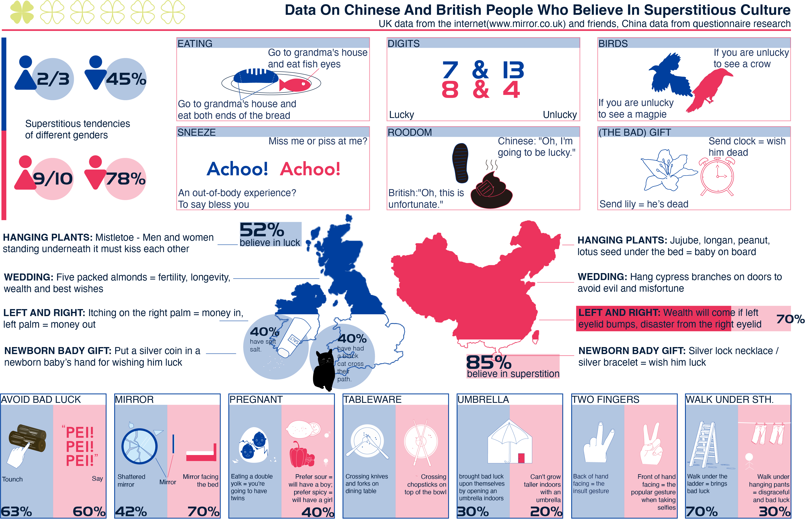

Introduction
This is a picture book that compares various superstitious behaviours in Chinese and English cultures. I hope readers enjoy the book and find it interesting, acknowledging the cultural differences around the world rather than prejudice.
Data Visualization
Technical Implementation

Write about the process of implementing your project. What technical elements or hardware are involved in your system. Write about why you made certain technical or design decisions etc.

Reflection and Future Development
Reflect on how the project went, what went well, what you learnt etc. Based on these reflections, conclude with how you would further develop this project if you were to make another version or how you would further develop your ideas.
References
- Technical Reference example. Include link where possible.
- Conceptual Reference example. Include link where possible.